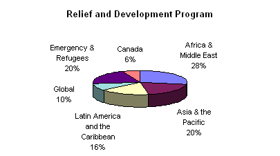

Primate’s World Relief & Development Fund
(Continued) Report to General Synod
Response to Disasters and Refugees
Natural disasters and civil conflict mean that there are 17
million refugees and 24 million people uprooted from their homes and displaced within
their countries. PWRDF continued to respond to their needs through support for emergency
response and programs which respond to the needs of refugees. PWRDF response to
emergencies is facilitated by Action by Churches Together (ACT) which was established in
1995 as a joint effort of the World Council of Churches (WCC) and Lutheran World
Federation (LWF). PWRDF also provided support to strengthen prevention and disaster
preparedness programs.
The African continent carries the heaviest burden of
disasters and refugee producing conflicts. PWRDF continued to respond to the needs of
refugees from Rwanda, Burundi and the Sudan as well as internally displaced people in
Sierra Leone and Liberia.
In Latin America Guatemalan refugees returned from
Mexico but conflicts in Colombia and Peru continue to produce internally displaced people.
In Asia, PWRDF supported refugee programs for Sri
Lankan refugees in India and Burmese refugees in Thailand.
In Canada, the PWRDF Refugee network facilitated
responses to refugees by Canadian Anglicans including the sponsorship of refugees to
settle in Canada. For example parishes in the Diocese of Rupert’s Land sponsored a
refugee family from Rwanda and the refugee network in the Diocese of Qu’Appelle
raised funds to support this sponsorship. Another response to refugee concerns is to
promote actions of solidarity with refugees. Over the last triennium, following a
resolution at the 1995 General Synod, individuals wrote letters to the government
expressing opposition to government regulations imposing a "Head Tax" of $975 on
refugees.
The Full Report
|

Disbursement by relief and development program.
Click to zoom in.PWRDF Supported Emergency Response and Refugees in:
Angola
Kenya
Mozambique
Liberia
Malawi
Sierra Leone
Somalia
South Africa
Tanzania
Burundi
Rwanda
Zaire
Sudan
Palestine
Iraq
Iran
Costa Rica
Mexico
Cuba
Guatemala
Nicaragua
Montserrat
Burma
North Korea
India
China
Vietnam
Sri Lanka
Bangladesh
Thailand
Papua New Guinea
Chechnya
Albania
Canada
|
{kind=link}